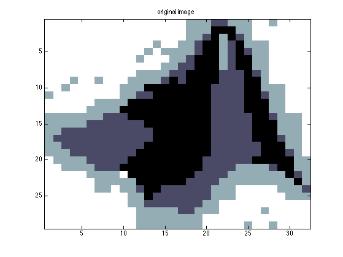
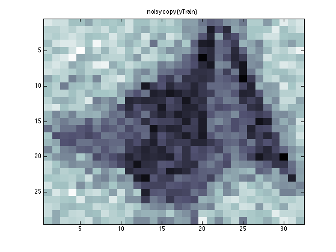

Fit the local CPDs of a lattice mrf given a noisy image and its underlying
discrete labels
Contents
The model has the following form
y1<- h1 - h2 -> y2
| |
y3 <- h3 - h4 -> y4where there are undirected edges between the hidden labels, arranged in a 2d grid, and each hidden node has a directed local evidence. Currently we fit the p(yi|hi) CPDs (which are conditional Gaussian), but not the hi-hj edge potentials. We allow for a certain fraction of the h nodes to be hidden, and fit the model using EM from a single image (with tied params) For the E step, we use TRWBP.
% This file is from pmtk3.googlecode.com %PMTKslow
Make data
setSeed(2); cmap = 'bone'; imgs = loadData('tinyImages'); img = double(imgs.matlabIconGray); [M, N] = size(img); ns = 5; % 32; img = reshape(quantizePMTK(img(:), 'levels', ns), M, N); img = canonizeLabels(img); nstates = max(img(:)); figure; imagesc(img); colormap(cmap); title('original image'); sigma = 0.1; yTrain = img./nstates + sigma*randn(M, N); yTest = img./nstates + sigma*randn(M, N); figure; imagesc(yTrain); colormap(cmap); title('noisy copy (yTrain)'); %{ figure; imagesc(yTest); colormap(cmap); title('noisy copy (yTest)'); %} 
Experiment
hide every H labels (0=fully obs, 1=fully hidden, 4=1/4 hidden)
hideStep = [0, 2]; % informativeEdgePot=1 encourages nearby labels to be similar % since thet represent discretizations of the underling signal % informativeEdgePot=0 is disconnected graph % local CPD is p(y | q=k)= gauss(mu(k), sigma(k)) % We initialize mu(k)=1, sigma(k)=1 % We will learn the mean and variance of pixel itnensities % corresponding to each hidden state k. localCPD = condGaussCpdCreate( nstates*ones(1, nstates), ones(1, 1, nstates)); for hi=1:numel(hideStep) H = hideStep(hi); labeledData = rowvec(img); % 1-by-npixels labeledData(1:H:end) = 0; % a certain fraction H are missing obsPattern = ones(size(img)); obsPattern(1:H:end) = 0; figure; imagesc(obsPattern); colormap(gray); colorbar title(sprintf('observed pixels, H=%d', H)) for useInformativeEdgePot=[0 1] %localCPD = localCPD.fitFn(localCPD, img(:), yTrain(:)); % Note, with fully observed data, we can always just fit the localCPD % directly, but we are testing mrfTrainEm if useInformativeEdgePot edgePot = exp(bsxfun(@(a, b)-abs(a-b), 1:nstates, (1:nstates)')./2); else edgePot = ones(nstates, nstates); end %figure; imagesc(edgePot); colormap('default'); title('tied edge potential'); nodePot = ones(1, nstates); %not needed G = mkGrid(M, N); infEngine = 'libdai'; opts = {'TRWBP', '[updates=SEQFIX,tol=1e-9,maxiter=10000,logdomain=0,nrtrees=0]'}; mrf = mrfCreate(G, 'nodePots', nodePot, 'edgePots', edgePot,... 'localCPDs', localCPD, 'infEngine', infEngine, 'infEngArgs', opts); %{ nodes = mrfInferNodes(mrf, 'localev', rowvec(yTest)); maxMarginals = maxidx(tfMarg2Mat(nodes), [], 1); figure; imagesc(reshape(maxMarginals, M, N)); colormap(cmap); title(sprintf('initial params, H=%d, informativeEdgePot = %d', H, useInformativeEdgePot)); %} mrf = mrfTrainEm(mrf, labeledData, 'localev', rowvec(yTrain), 'verbose', true); nodes = mrfInferNodes(mrf, 'localev', rowvec(yTest)); maxMarginals = maxidx(tfMarg2Mat(nodes), [], 1); figure; imagesc(reshape(maxMarginals, M, N)); colormap(cmap); title(sprintf('learned params, H=%d, informativeEdgePot = %d', H, useInformativeEdgePot)); end end placeFigures;
initializing model for EM
Error using ==> libdaiInfer at 23
could not find dai.mexmaci64 - need to install libdai
Error in ==> mrfInferQuery at 96
[logZ, nodeBels, cliques, cliqueLookup] = libdaiInfer(factors, args{:});
Error in ==> mrfInferNodes at 22
[bels, logZ] = mrfInferQuery(mrf, query, 'doSlice', doSlice, varargin{:});
Error in ==> mrfTrainEm>estep at 59
[pmarg, llobs] = mrfInferNodes(mrf, args{:});
Error in ==> mrfTrainEm>@(mrf,data)estep(mrf,data,localEv) at 18
estepFn = @(mrf, data)estep(mrf, data, localEv);
Error in ==> emAlgo at 62
[ess, ll] = estep(model, data);
Error in ==> mrfTrainEm at 19
[mrf, loglikHist] = emAlgo(mrf, data, @init, estepFn, @mstep, EMargs{:});
Error in ==> mrfFitImgSemiObsDemo at 105
mrf = mrfTrainEm(mrf, labeledData, 'localev', rowvec(yTrain), 'verbose', true);